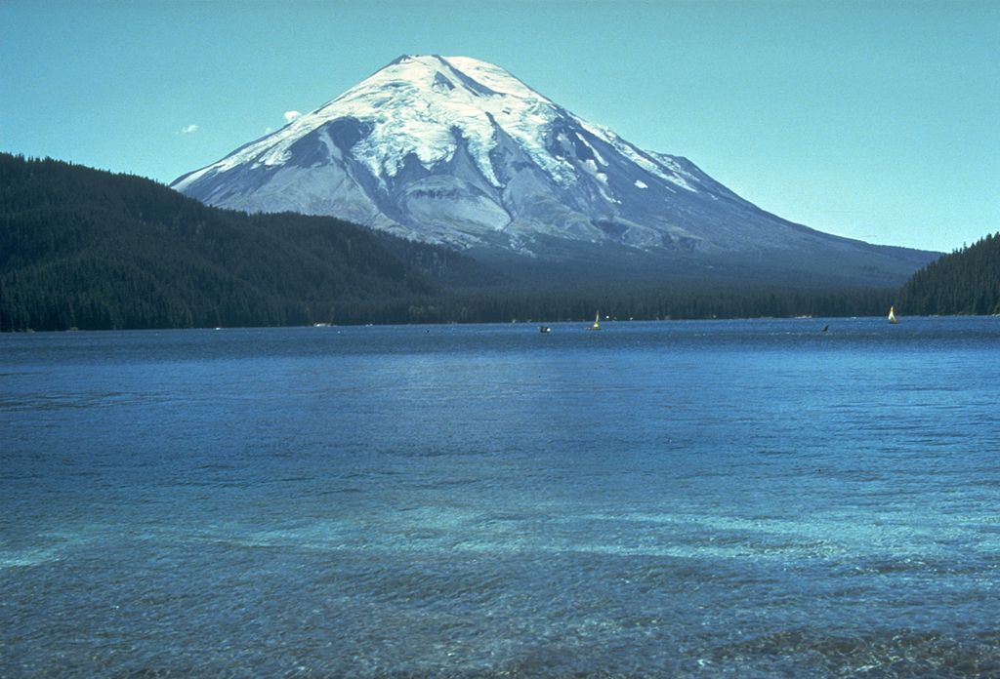

Top 8. Mount Hudson(1991)

Description
Hudson Volcano (Spanish: Volcán Hudson, Cerro Hudson, or Monte Hudson) is the most active volcano in the southern part of the Southern Volcanic Zone of the Andes Mountains in Chile, having erupted most recently in 2011. It was formed by the subduction of the oceanic Nazca Plate under the continental South American Plate. South of Hudson is a smaller volcano, followed by a long gap without active volcanoes, then the Austral Volcanic Zone. Hudson has the form of a 10-kilometre-wide (6-mile) caldera filled with ice; the Huemules Glacier emerges from the northwestern side of the caldera. The volcano has erupted rocks ranging from basalt to rhyolite, but large parts of the caldera are formed by non-volcanic rocks.
The volcano erupted numerous times in the late Pleistocene and Holocene, Forming widespread tephra deposits both in the proximity of Hudson and in the wider region. Four large eruptions took place in 17,300–17,440 BP ("H0 eruption"), 7,750 BP ("H1 eruption"), 4,200 BP ("H2 eruption") and in 1991 AD ("H3 eruption"); the second is among the most intense volcanic eruptions in South America during the Holocene. A smaller eruption occurred in 1971. The 7,750 BP and 1991 eruptions had a substantial impact on the human population of Patagonia and (for the 7,750 BP eruption) Tierra del Fuego: The 7,750 BP eruption devastated the local ecosystem and may have caused substantial shifts in human settlement and lifestyle. During the 1991 eruption, volcanic ash covered a large area in Chile and neighbouring Argentina, causing high mortality in farm animals, aggravating an existing economic crisis, and reaching as far as Antarctica.
Eruption History
Hudson has been active for more than one million years. The northeastern sector of the volcano is older than the southeastern, which has yielded ages of 120,000–100,000 years, but the incomplete stratigraphy of the edifice, which is largely covered with ice, precludes establishing a proper history of its growth. There are few tephras from the Pleistocene–Holocene transition time close to the volcano, but several have been found in marine cores west of Hudson.